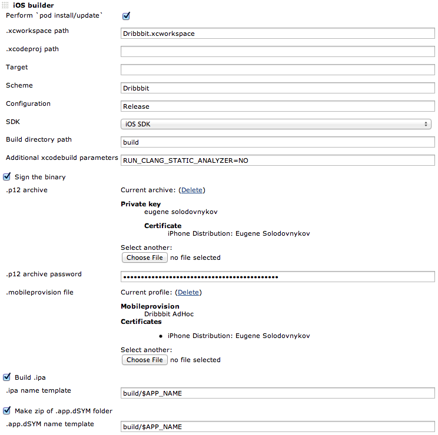

Greet iOS builder plugin for Jenkins CI!
It's Jenkins CI extension which simplifies build step setup for iOS projects. iOS builder allows you to install/update pods in you project (you just put Podfile to the SCM, right?!), specify xcodebuild parameters and (it's, actually, the main advantage of the plugin) to easily attach your private key and mobileprovision profile to the build configuration so they would be used during the build step without any dependence on your project config. It also makes an IPA archive of your app if you wish so all you'd need to do is to publish it wherever you want. This plugin is in beta state now so please be patient.
How to build it
That plugin could be built using maven. The simplest way to get maven on your machine is to use Homebrew:
$ brew install maven
Once you have maven installed – use these lines in your terminal to grab the sources and build the plugin.
$ git clone git://github.com/sharpland/iosbuilder-plugin.git
$ cd iosbuilder-plugin
$ mvn package
Once it's built – you should see iOSBuilder.hpi file in target subfolder which should be used to install that plugin in Jenkins. Simply go to http://<jenkins_root_url>/pluginManager/advanced (same as Manage Jenkins -> Manage Plugins -> Advanced), upload iOSBuilder.hpi file in "Upload plugin" section and restart Jenkins.
Now go to your project, add iOS builder as a build step, configure it and run. Isn't it cool?

Warning!
The private key/password pair is accessible by the people who have rights to configure Jenkins jobs. That's gonna be improved in future.